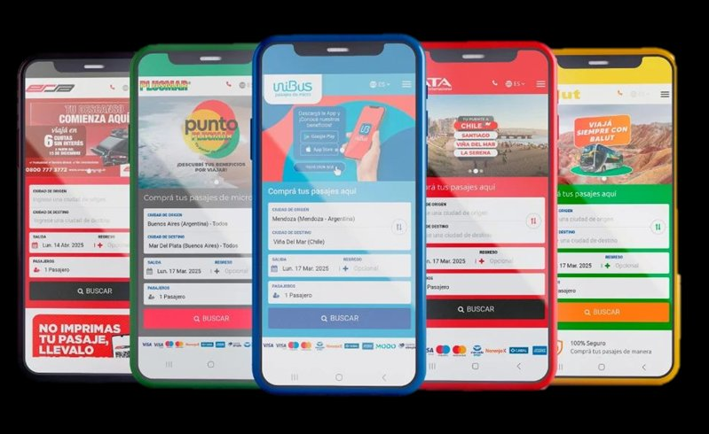
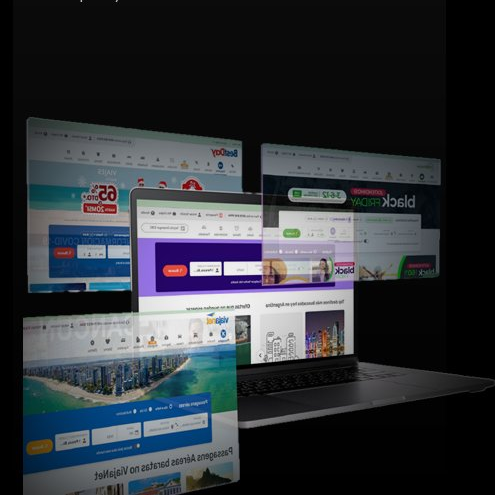
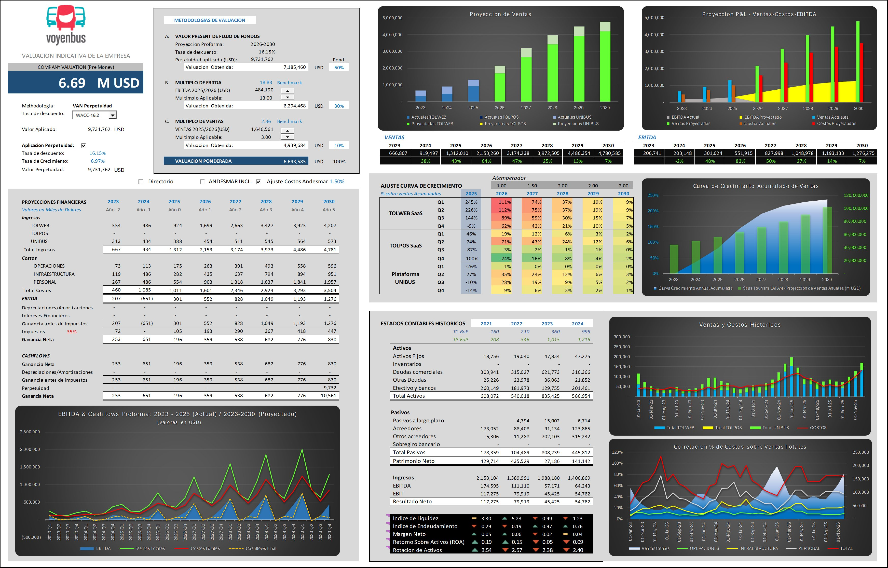

VOYENBUS
En un mercado que se expande y madura, nuestra visión, tecnología y trayectoria nos posicionan para capitalizar la nueva era del transporte, convirtiendo a Voyenbus en la referencia indiscutida del canal digital. In a market that is expanding and maturing, our vision, technology and track record position us to capitalize on the new transportation era, making Voyenbus the undisputed reference of the digital channel. Em um mercado que se expande e amadurece, nossa visão, tecnologia e trajetória nos posicionam para capitalizar a nova era do transporte, tornando a Voyenbus a referência indiscutível do canal digital.
LA OPORTUNIDAD THE OPPORTUNITY A OPORTUNIDADE
Una plataforma probada, un mercado en expansión, una valuación atractiva. A proven platform, an expanding market, an attractive valuation. Uma plataforma comprovada, um mercado em expansão, uma avaliação atraente.
VOYENBUS
Plataforma digital consolidada en el sector de transporte terrestre en LatAm desde 2004.
Consolidated digital platform in the LatAm ground transportation sector since 2004.
Plataforma digital consolidada no setor de transporte terrestre na América Latina desde 2004.
Modelo Dual Dual Model Modelo Dual
B2C: Venta de billetes online (UNIBUS).
B2B: Soluciones tecnológicas para operadores (TOLWEB · TOLPOS · TOL API).
B2C: Online ticket sales (UNIBUS).
B2B: Technology solutions for operators (TOLWEB · TOLPOS · TOL API).
B2C: Venda de bilhetes online (UNIBUS).
B2B: Soluções tecnológicas para operadores (TOLWEB · TOLPOS · TOL API).
Mercado Market Mercado
El mercado de boletos de autobús online en Sudamérica crece a 26.2% CAGR, proyectado a USD 8.69 mil millones para 2030.
The online bus ticket market in South America grows at 26.2% CAGR, projected to USD 8.69 billion by 2030.
O mercado de bilhetes de ônibus online na América do Sul cresce a 26,2% CAGR, projetado para USD 8,69 bilhões em 2030.
Valuación Estimada Estimated Valuation Avaliação Estimada
Basada en comparables de mercado, múltiplos EBITDA y potencial de crecimiento.
Based on market comparables, EBITDA multiples and growth potential.
Baseada em comparáveis de mercado, múltiplos EBITDA e potencial de crescimento.
Sinergias de Valor Value Synergies Sinergias de Valor
Significativas en tecnología, expansión geográfica y diversificación de ingresos.
Significant in technology, geographic expansion and revenue diversification.
Significativas em tecnologia, expansão geográfica e diversificação de receitas.
Recomendación Recommendation Recomendação
Adquisición. Consolidar y expandir presencia en el mercado con activos tecnológicos diferenciales.
Acquisition. Consolidate and expand market presence with differentiated technology assets.
Aquisição. Consolidar e expandir presença no mercado com ativos tecnológicos diferenciados.
Resumen Ejecutivo Completo Full Executive Summary Resumo Executivo Completo
Memorándum integral con tesis, comparables, drivers de valuación y rango estimado. Comprehensive memo with thesis, comparables, valuation drivers and estimated range. Memorando integral com tese, comparáveis, drivers de avaliação e faixa estimada.
LA EMPRESA THE COMPANY A EMPRESA
Fundación 2004 · Modelo de Negocio Dual · ISO 9001:2015 Founded 2004 · Dual Business Model · ISO 9001:2015 Certified Fundada em 2004 · Modelo de Negócio Dual · ISO 9001:2015
Tecnología, Alcance Global, Calidad Technology, Global Reach, Quality Tecnologia, Alcance Global, Qualidade
Plataforma probada en 4 continentes. A proven platform across 4 continents. Plataforma comprovada em 4 continentes.
Voyenbus comercializa pasajes de bus de media y larga distancia mediante APIs conectadas a agentes web y GDS líderes mundiales.
Voyenbus markets medium and long-distance bus tickets through APIs connected to web agents and the world's leading GDS systems.
A Voyenbus comercializa passagens de ônibus de média e longa distância por meio de APIs conectadas a agentes web e GDS líderes mundiais.
- Tecnología: APIs conectadas a Sabre, Google Transit y otros GDS. Technology: APIs connected to Sabre, Google Transit and other GDS. Tecnologia: APIs conectadas a Sabre, Google Transit e outros GDS.
- Alcance: Servicios de buses en América Latina, EEUU, Europa y Reino Unido. Reach: Bus services in Latin America, US, Europe and the United Kingdom. Alcance: Serviços de ônibus na América Latina, EUA, Europa e Reino Unido.
- Certificación: ISO 9001:2015 en diseño y desarrollo de software. Certification: ISO 9001:2015 in software design and development. Certificação: ISO 9001:2015 em design e desenvolvimento de software.
- Stack: Java · PHP · Ruby · CSS3 — plataforma propietaria. Stack: Java · PHP · Ruby · CSS3 — proprietary platform. Stack: Java · PHP · Ruby · CSS3 — plataforma proprietária.
Perfil de la Empresa Detallado Detailed Company Profile Perfil Detalhado da Empresa
Modelo dual B2C/B2B, escala operacional, alcance geográfico y base tecnológica. Dual B2C/B2B model, operational scale, geographic reach and technology base. Modelo dual B2C/B2B, escala operacional, alcance geográfico e base tecnológica.
BENEFICIOS & SOLUCIONES BENEFITS & SOLUTIONS BENEFÍCIOS & SOLUÇÕES
Ventajas para el viajero · Soluciones para el operador. Advantages for travelers · Solutions for operators. Vantagens para o viajante · Soluções para o operador.
Beneficios para el Viajero Traveler Benefits Benefícios para o Viajante
UNIBUS · Pasajes de Micro UNIBUS · Bus Tickets UNIBUS · Passagens de Ônibus
El portal y aplicación móvil B2C de Voyenbus. Compra fácil, segura y rápida de e-tickets, con promociones, información en tiempo real y notificaciones por email, navegador y SMS.
Voyenbus's B2C portal and mobile app. Easy, secure and fast e-ticket purchase, with promotions, real-time information and email, browser and SMS notifications.
O portal e aplicativo móvel B2C da Voyenbus. Compra fácil, segura e rápida de e-tickets, com promoções, informações em tempo real e notificações por email, navegador e SMS.

Soluciones B2B para Operadores B2B Solutions for Operators Soluções B2B para Operadores
TOLWEB
Tu puerta al mundo digital Your gateway to the digital world Sua porta para o mundo digital
Conectamos tu negocio con miles de potenciales clientes mediante una comunicación directa, eficiente y ágil. Aumenta visibilidad y mejora la experiencia de usuario.
We connect your business with thousands of potential customers through direct, efficient and agile communication. Increase visibility and improve user experience.
Conectamos seu negócio com milhares de clientes potenciais por meio de uma comunicação direta, eficiente e ágil. Aumenta a visibilidade e melhora a experiência do usuário.
TOLPOS
Omnicanalidad sin límites Limitless omnichannel Omnicanalidade sem limites
Integra y unifica los canales físicos y online de compras, ofreciendo una experiencia omnicanal fluida y coherente. Gestión centralizada de inventarios, ventas y atención.
Integrates and unifies physical and online purchase channels, offering a fluid, coherent omnichannel experience. Centralized inventory, sales and support management.
Integra e unifica os canais físicos e online de compras, oferecendo uma experiência omnicanal fluida e coerente. Gestão centralizada de estoques, vendas e atendimento.
TOL API
Disponibilidad vía API Availability via API Disponibilidade via API
Conectándose a Voyenbus se tiene acceso inmediato a servicios de buses en América Latina, EEUU, Europa y Reino Unido. Para todas las unidades de negocio.
By connecting to Voyenbus you get immediate access to bus services in Latin America, US, Europe and the United Kingdom. For all business units.
Ao se conectar à Voyenbus, você tem acesso imediato a serviços de ônibus na América Latina, EUA, Europa e Reino Unido. Para todas as unidades de negócio.
Para todas las unidades de negocio For every business unit Para todas as unidades de negócio
Conectándose a VoyenBus se tiene acceso inmediato a servicios de buses en América Latina, EEUU, Europa y Reino Unido. El inventario de los operadores se proyecta a OTAs, GDS (Sabre), Google Transit, agencias de viajes y portales propios mediante una sola integración API.
By connecting to VoyenBus you get immediate access to bus services in Latin America, US, Europe and the United Kingdom. Operator inventory is projected to OTAs, GDS (Sabre), Google Transit, travel agencies and proprietary portals through a single API integration.
Ao se conectar à VoyenBus, você tem acesso imediato a serviços de ônibus na América Latina, EUA, Europa e Reino Unido. O inventário dos operadores é projetado para OTAs, GDS (Sabre), Google Transit, agências de viagens e portais próprios através de uma única integração API.

Modelo de Monetización Revenue Model Modelo de Monetização
Comisiones por ventas B2C + Licencias / SaaS por soluciones B2B Commissions Comissões sobre vendas B2C + Licenças / SaaS sobre soluções B2B on B2C sales + Licenses / SaaS on B2B solutions
Lienzo del Modelo de Negocio Business Model Canvas Quadro do Modelo de Negócio
Business Model CANVAS
- Empresas de autobuses interurbanos
- Interurban bus companies
- Empresas de ônibus interurbanos
- Agencias de viajes
- Travel agencies
- Agências de viagens
- Proveedores de infraestructura
- Infrastructure providers
- Fornecedores de infraestrutura
- Sistemas de distribución global (GDS como Sabre)
- Global distribution systems (GDS like Sabre)
- Sistemas de distribuição global (GDS como Sabre)
- Pasarelas de pago
- Payment gateways
- Gateways de pagamento
- Desarrollo y mantenimiento de software
- Software development and maintenance
- Desenvolvimento e manutenção de software
- Gestión de red de operadores y agencias
- Operator and agency network management
- Gestão da rede de operadores e agências
- Marketing digital B2C y B2B
- B2C and B2B digital marketing
- Marketing digital B2C e B2B
- Procesamiento de transacciones
- Transaction processing
- Processamento de transações
- Soporte técnico y al cliente
- Technical and customer support
- Suporte técnico e ao cliente
Plataforma integral para la comercialización y distribución de servicios de autobuses interurbanos y otras modalidades de movilidad.
Comprehensive platform for the commercialization and distribution of interurban bus services and other mobility modalities.
Plataforma integral para a comercialização e distribuição de serviços de ônibus interurbanos e outras modalidades de mobilidade.
- B2C: Compra fácil, segura y rápida de e-tickets, promociones e información en tiempo real
- B2C: Easy, secure and fast e-ticket purchase, promotions and real-time information
- B2C: Compra fácil, segura e rápida de e-tickets, promoções e informações em tempo real
- B2B: Motor de ventas marca blanca, marketing omnicanal, API global, BI y Yield Management
- B2B: White-label sales engine, omnichannel marketing, global API, BI and Yield Management
- B2B: Motor de vendas white-label, marketing omnicanal, API global, BI e Yield Management
- Confiabilidad: +20 años de operación, ISO 9001:2015
- Reliability: +20 years of operation, ISO 9001:2015
- Confiabilidade: +20 anos de operação, ISO 9001:2015
- Escala: +4.5M billetes emitidos, +85 operadores
- Scale: +4.5M tickets issued, +85 operators
- Escala: +4,5M de bilhetes emitidos, +85 operadores
- Soporte digital (notificaciones, chat, chatbot)
- Digital support (notifications, chat, chatbot)
- Suporte digital (notificações, chat, chatbot)
- Asociaciones B2B a largo plazo
- Long-term B2B partnerships
- Parcerias B2B de longo prazo
- Servicio al cliente
- Customer service
- Atendimento ao cliente
- Auto-servicio en plataforma web/app
- Self-service on web/app platform
- Autoatendimento na plataforma web/app
- Viajeros B2C (usuarios finales)
- B2C Travelers (end users)
- Viajantes B2C (usuários finais)
- Empresas de transporte (operadores de bus)
- Transport companies (bus operators)
- Empresas de transporte (operadores de ônibus)
- Agencias de viajes
- Travel agencies
- Agências de viagens
- OTAs y GDS (vía API)
- OTAs and GDS (via API)
- OTAs e GDS (via API)
- Plataforma tecnológica propietaria (JAVA, PHP, Ruby)
- Proprietary technology platform (JAVA, PHP, Ruby)
- Plataforma tecnológica proprietária (JAVA, PHP, Ruby)
- Red de operadores y agencias
- Network of operators and agencies
- Rede de operadores e agências
- Equipo de desarrollo, marca y reputación
- Development team, brand and reputation
- Equipe de desenvolvimento, marca e reputação
- Certificación ISO 9001:2015
- ISO 9001:2015 certification
- Certificação ISO 9001:2015
- Integraciones con Sabre, Google y otros GDS
- Integrations with Sabre, Google and other GDS
- Integrações com Sabre, Google e outros GDS
- Web (UNIBUS) y aplicaciones móviles
- Web (UNIBUS) and mobile applications
- Web (UNIBUS) e aplicativos móveis
- APIs (integración con GDS, Google Transit)
- APIs (integration with GDS, Google Transit)
- APIs (integração com GDS, Google Transit)
- Red de agencias de viajes
- Network of travel agencies
- Rede de agências de viagens
- Puntos de venta físicos (a través de TOLPOS)
- Physical points of sale (through TOLPOS)
- Pontos de venda físicos (através do TOLPOS)
- Desarrollo y mantenimiento de tecnología
- Technology development and maintenance
- Desenvolvimento e manutenção de tecnologia
- Marketing y ventas, infraestructura de servidores
- Marketing and sales, server infrastructure
- Marketing e vendas, infraestrutura de servidores
- Personal (desarrollo, soporte, ventas)
- Personnel (development, support, sales)
- Pessoal (desenvolvimento, suporte, vendas)
- Costos de procesamiento de pagos, gastos administrativos
- Payment processing costs, administrative expenses
- Custos de processamento de pagamentos, despesas administrativas
- Comisiones por venta de tickets (UNIBUS)
- Commissions on ticket sales (UNIBUS)
- Comissões sobre venda de tickets (UNIBUS)
- Licencias / SaaS por soluciones B2B (TOLWEB, TOLPOS)
- Licenses / SaaS for B2B solutions (TOLWEB, TOLPOS)
- Licenças / SaaS sobre soluções B2B (TOLWEB, TOLPOS)
- Servicios de consultoría e integración
- Consulting and integration services
- Serviços de consultoria e integração
- Acuerdos comerciales con OTAs y GDS
- Commercial agreements with OTAs and GDS
- Acordos comerciais com OTAs e GDS
Producto / Servicio Product / Service Produto / Serviço
UNIBUS B2C, suite TOLPOS/TOLWEB B2B, propuesta de valor, diferenciación y stack tecnológico. UNIBUS B2C, TOLPOS/TOLWEB B2B suite, value proposition, differentiation and technology stack. UNIBUS B2C, suíte TOLPOS/TOLWEB B2B, proposta de valor, diferenciação e stack tecnológico.
Modelo de Negocio Business Model Modelo de Negócio
Generación de ingresos, estructura de precios, escalabilidad y limitaciones de capital. Revenue generation, pricing structure, scalability and capital constraints. Geração de receita, estrutura de preços, escalabilidade e limitações de capital.
EL MERCADO THE MARKET O MERCADO
Crecimiento robusto, impulsores claves y posición competitiva. Robust growth, key drivers and competitive positioning. Crescimento robusto, principais impulsionadores e posição competitiva.
Crecimiento Robusto Robust Growth Crescimento Robusto
CAGR
Mercado de servicios de reserva de viajes online en LatAm — proyectado a USD 70.6B para 2030.
Online travel booking services market in LatAm — projected to USD 70.6B by 2030.
Mercado de serviços de reserva de viagens online na América Latina — projetado para USD 70,6B em 2030.
Reserva de Transporte Transport Booking Reserva de Transporte
Segmento de mayor generación de ingresos dentro del mercado de viajes online.
Highest revenue-generating segment within the online travel market.
Segmento de maior geração de receita dentro do mercado de viagens online.
CAGR
Boletos de autobús en Sudamérica — proyectado a USD 8.69B para 2030.
Bus tickets in South America — projected to USD 8.69B by 2030.
Bilhetes de ônibus na América do Sul — projetado para USD 8,69B em 2030.
Impulsores Claves Key Drivers Principais Impulsionadores
Digitalización acelerada y alta penetración de smartphones.
Accelerated digitization and high smartphone penetration.
Digitalização acelerada e alta penetração de smartphones.
Conveniencia y pagos sin contacto en alta demanda.
Convenience and contactless payments in high demand.
Conveniência e pagamentos sem contato em alta demanda.
Avances en IA: previsión de demanda, optimización de rutas, precios dinámicos.
AI advances: demand forecasting, route optimization, dynamic pricing.
Avanços em IA: previsão de demanda, otimização de rotas, preços dinâmicos.
Plataformas intermodales y electrificación de flotas.
Intermodal platforms and fleet electrification.
Plataformas intermodais e eletrificação de frotas.
Análisis Competitivo · Modelo de las 5 Fuerzas de Porter Competitive Analysis · Porter's 5 Forces Model Análise Competitiva · Modelo das 5 Forças de Porter
Amenaza de Nuevos Entrantes Threat of New Entrants Ameaça de Novos Entrantes
Barreras de entrada altas: inversión en tecnología propietaria, red de operadores y agencias, capital de marketing. Sin embargo, OTAs globales pueden entrar vía adquisiciones.
High entry barriers: investment in proprietary technology, operator and agency network, marketing capital. However, global OTAs can enter via acquisitions.
Barreiras de entrada altas: investimento em tecnologia proprietária, rede de operadores e agências, capital de marketing. No entanto, OTAs globais podem entrar via aquisições.
Los operadores tienen cierto poder en rutas clave, pero Voyenbus mitiga este riesgo ofreciendo soluciones B2B de valor añadido, convirtiéndolos en socios estratégicos.
Operators have some leverage on key routes, but Voyenbus mitigates this by offering value-added B2B solutions, making them strategic partners.
Os operadores têm algum poder em rotas-chave, mas a Voyenbus mitiga esse risco oferecendo soluções B2B de valor agregado, transformando-os em parceiros estratégicos.
Poder de Proveedores Supplier Power Poder dos Fornecedores
Rivalidad entre Competidores Existing Rivalry Rivalidade entre Concorrentes
El mercado online en LatAm está en consolidación acelerada. Plataforma 10 fue adquirida por Travelier; Despegar expande oferta.
The online LatAm market is in accelerated consolidation. Plataforma 10 was acquired by Travelier; Despegar is expanding.
O mercado online na América Latina está em consolidação acelerada. A Plataforma 10 foi adquirida pela Travelier; a Despegar expande sua oferta.
Poder de Compradores Buyer Power Poder dos Compradores
Los consumidores tienen múltiples opciones (portales, apps, sitios de operadores). La decisión se basa en precio, conveniencia y experiencia.
Consumers have multiple options (portals, apps, operator sites). Decisions are based on price, convenience and experience.
Os consumidores têm múltiplas opções (portais, apps, sites de operadores). A decisão é baseada em preço, conveniência e experiência.
Vuelos low-cost, vehículo privado y, en menor medida, tren. Mitigada por la competitividad de precios del bus y la necesidad de viajes cortos/medios.
Low-cost flights, private vehicles and, to a lesser extent, train. Mitigated by bus price competitiveness and the need for short/medium trips.
Voos low-cost, veículo privado e, em menor medida, trem. Mitigada pela competitividade de preços do ônibus e pela necessidade de viagens curtas/médias.
Amenaza de Sustitutos Threat of Substitutes Ameaça de Substitutos
Análisis de Mercado Detallado Detailed Market Analysis Análise de Mercado Detalhada
Tamaño global y regional, TAM/SAM/SOM, competidores, adquisición de Plataforma 10, drivers de la industria y 20 fuentes verificadas. Global and regional sizing, TAM/SAM/SOM, competitors, Plataforma 10 acquisition, industry drivers and 20 verified sources. Tamanho global e regional, TAM/SAM/SOM, concorrentes, aquisição da Plataforma 10, drivers da indústria e 20 fontes verificadas.
POR QUÉ ADQUIRIR WHY ACQUIRE POR QUE ADQUIRIR
Cuatro palancas de valor inmediatas para el comprador estratégico. Four immediate value levers for the strategic buyer. Quatro alavancas de valor imediatas para o comprador estratégico.
Herramienta B2B2C de Transformación Digital B2B2C Digital Transformation Tool Ferramenta B2B2C de Transformação Digital
Voyenbus se diferencia como motor B2B2C: entrega a las empresas de transporte sus propias webs, apps y herramientas (TOLWEB, TOLPOS, TOL API) para que vendan online bajo su marca. No es solo un canal de venta — es la plataforma de transformación digital integral del operador. Esta capacidad directa de digitalizar a la empresa es la razón estratégica más fuerte para adquirir Voyenbus.
Voyenbus stands out as a B2B2C engine: it delivers transport companies their own websites, apps and tools (TOLWEB, TOLPOS, TOL API) to sell online under their own brand. It's not just a sales channel — it's the operator's integral digital-transformation platform. This direct ability to digitize the operator is the strongest strategic reason to acquire Voyenbus.
A Voyenbus se diferencia como motor B2B2C: entrega às empresas de transporte seus próprios sites, aplicativos e ferramentas (TOLWEB, TOLPOS, TOL API) para que vendam online sob sua marca. Não é apenas um canal de vendas — é a plataforma integral de transformação digital do operador. Essa capacidade direta de digitalizar a empresa é a razão estratégica mais forte para adquirir a Voyenbus.
Bloqueo de Entrada a la Competencia Block Competitor Market Entry Bloqueio da Entrada de Concorrentes
Adquirir Voyenbus implica cerrarle la puerta a otros players globales que buscarían entrar al mercado argentino y latinoamericano de transformación digital del transporte. Su red establecida con +85 operadores, su tecnología propia y su posicionamiento como tercera fuerza (detrás de Plataforma 10 y Central de Pasajes) la convierten en un activo defensivo de alto valor.
Acquiring Voyenbus means closing the door on other global players looking to enter the Argentine and Latin American digital-transformation transport market. Its established network of +85 operators, proprietary technology and positioning as the third force (behind Plataforma 10 and Central de Pasajes) make it a high-value defensive asset.
Adquirir a Voyenbus implica fechar a porta a outros players globais que buscariam entrar no mercado argentino e latino-americano de transformação digital do transporte. Sua rede estabelecida com +85 operadores, sua tecnologia própria e seu posicionamento como terceira força (atrás de Plataforma 10 e Central de Pasajes) a transformam em um ativo defensivo de alto valor.
Inteligencia Artificial Avanzada Advanced Artificial Intelligence Inteligência Artificial Avançada
Voyenbus está trabajando muy fuerte con IA en tableros de analítica con agentes que dan consejos, hacen estadística y predicción. Aplicación intensiva en atención al cliente (pre y post-viaje), control de fraude y soporte. Posición destacada en IA aplicada al transporte que pocas plataformas de la región pueden igualar — un activo estratégico de cara al futuro del sector.
Voyenbus is investing heavily in AI for analytics dashboards with agents that provide advice, run statistics and predictions. Intensive application in customer service (pre- and post-trip), fraud control and support. Strong AI position applied to transportation that few regional platforms can match — a strategic asset for the sector's future.
A Voyenbus está investindo fortemente em IA em painéis analíticos com agentes que dão conselhos, fazem estatística e previsão. Aplicação intensiva em atendimento ao cliente (pré e pós-viagem), controle de fraude e suporte. Posição destacada em IA aplicada ao transporte que poucas plataformas regionais podem igualar — um ativo estratégico para o futuro do setor.
Acceso a Tecnología Avanzada Access to Advanced Technology Acesso a Tecnologia Avançada
Pila tecnológica B2C/B2B/B2B2C madura, APIs robustas, B.I. con IA y automatización de procesos. Stack: Java, PHP, Ruby, integraciones Sabre y Google. Foco principal en el mercado local argentino con escalamiento regional.
Mature B2C/B2B/B2B2C technology stack, robust APIs, AI-powered B.I. and process automation. Stack: Java, PHP, Ruby, Sabre and Google integrations. Primary focus on the local Argentine market with regional scaling.
Stack tecnológico B2C/B2B/B2B2C maduro, APIs robustas, B.I. com IA e automação de processos. Stack: Java, PHP, Ruby, integrações Sabre e Google. Foco principal no mercado local argentino com escalamento regional.
Expansión Inmediata Immediate Expansion Expansão Imediata
Integración a una red establecida con foco principal en Argentina y presencia activa en Brasil, Chile, Uruguay, Paraguay. +85 operadores, red de agencias corporativas, distribución global a EU/EEUU vía GDS.
Integration into an established network with primary focus on Argentina and active presence in Brazil, Chile, Uruguay, Paraguay. +85 operators, corporate agency network, global distribution to EU/US via GDS.
Integração a uma rede estabelecida com foco principal na Argentina e presença ativa em Brasil, Chile, Uruguai, Paraguai. +85 operadores, rede de agências corporativas, distribuição global para UE/EUA via GDS.
Madurez Operacional Operational Maturity Maturidade Operacional
Procesos robustos avalados por la certificación ISO 9001:2015. Equipo experimentado (+20 años), reputación sólida y un track record sólido de transacciones procesadas. Volumen anual cercano a USD 20M entre todos los canales.
Robust processes backed by ISO 9001:2015 certification. Experienced team (+20 years), solid reputation and a proven track record of processed transactions. Annual volume near USD 20M across all channels.
Processos robustos avalizados pela certificação ISO 9001:2015. Equipe experiente (+20 anos), reputação sólida e um histórico consistente de transações processadas. Volume anual próximo a USD 20M em todos os canais.
VALUACIÓN VALUATION AVALIAÇÃO
Metodología triangulada · Mayo 2026 Triangulated methodology · May 2026 Metodologia triangulada · Maio de 2026
P&L Evolution
Todos los valores en millones de USD All values in USD Millions Todos os valores em milhões de USD
| REAL | REAL | PLAN | |
|---|---|---|---|
| 2024 | 2025 | 2026 | |
| OTA (Unibus) | 0.11 | 0.10 | 0.20 |
| White Label (TolWeb) | 0.38 | 0.50 | 0.90 |
| # Tickets (MM) # Tickets (MM) # Bilhetes (MM) | 0.49 | 0.60 | 1.10 |
| Tasa de Crecimiento (%) Growth Rate (%) Taxa de Crescimento (%) | 23% | 84% | |
| Ticket Promedio Unibus (USD) Unibus Average Ticket Ticket Médio Unibus | 35 | 35 | 35 |
| Ticket Promedio White Label (USD) White Label Average Ticket Ticket Médio White Label | 20 | 35 | 30 |
| OTA (Unibus) | 4 | 4 | 6 |
| White Label (TolWeb) | 8 | 18 | 28 |
| GMV | 11 | 21 | 34 |
| Tasa de Crecimiento (%) Growth Rate (%) Taxa de Crescimento (%) | 84% | 62% | |
| Take Rate Unibus % Unibus Take Rate % Take Rate Unibus % | 10% | 10% | 8% |
| Take Rate White Label % White Label Take Rate % Take Rate White Label % | 6% | 6% | 6% |
| OTA (Unibus) | 0.40 | 0.30 | 0.50 |
| White Label (TolWeb) | 0.50 | 1.10 | 1.70 |
| Other (TOLPOS) | — | — | — |
| Ingreso Neto Net Revenue Receita Líquida | 0.82 | 1.38 | 2.16 |
| Tasa de Crecimiento (%) Growth Rate (%) Taxa de Crescimento (%) | 69% | 56% | |
| COGS (excluyendo personal) COGS (Excluding people) COGS (excluindo pessoal) | -0.10 | -0.10 | -0.20 |
| Ganancia Bruta Gross Profit Lucro Bruto | 0.72 | 1.28 | 1.96 |
| Margen Bruto (% NR) Gross Margin (% NR) Margem Bruta (% NR) | 88% | 93% | 91% |
| Equipo / Personal Team / People Equipe / Pessoal | -0.27 | -0.55 | -0.90 |
| Otros gastos Other Expenses Outras Despesas | 0 | 0 | 0 |
| Infraestructura Infrastructure Infraestrutura | -0.50 | -0.22 | -0.24 |
| Operaciones Operations Operações | -0.11 | -0.18 | -0.26 |
| Proforma EBITDA | -0.16 | 0.34 | 0.56 |
| Tasa de Crecimiento (%) Growth Rate (%) Taxa de Crescimento (%) | 107% | 67% | |
| KPI's | 2025 | ||
| Empleados Full Time Full Time Employees Empregados Full Time | 10 | ||
| Saldo Neto de Caja Net Cash Balance Saldo Líquido de Caixa | 20 | ||
Metodologías de Valuación Valuation Methodologies Metodologias de Avaliação
| Método Method Método | Parámetros Parameters Parâmetros | Valuación Valuation Avaliação | Pond. Weight Pond. |
|---|---|---|---|
|
A. Flujo de Fondos Descontado
A. Discounted Cash Flow
A. Fluxo de Caixa Descontado
VAN Perpetuidad · WACC 16.15% |
Proyección 2026–2030 · Perpetuidad USD 9.73M 2026–2030 projection · Perpetuity USD 9.73M Projeção 2026–2030 · Perpetuidade USD 9,73M | USD 7,185,460 | 60% |
|
B. Múltiplo de EBITDA
B. EBITDA Multiple
B. Múltiplo de EBITDA
Benchmark 18.83x |
EBITDA 2025-2026 USD 484,190 · Múltiplo aplicado 13.0x 2025-2026 EBITDA USD 484,190 · Applied multiple 13.0x EBITDA 2025-2026 USD 484.190 · Múltiplo aplicado 13,0x | USD 6,294,468 | 30% |
|
C. Múltiplo de Ventas
C. Sales Multiple
C. Múltiplo de Vendas
Benchmark 2.36x |
Ventas 2025-2026 USD 1,646,561 · Múltiplo aplicado 3.0x 2025-2026 Sales USD 1,646,561 · Applied multiple 3.0x Vendas 2025-2026 USD 1.646.561 · Múltiplo aplicado 3,0x | USD 4,939,684 | 10% |
| VALUACIÓN PONDERADA WEIGHTED VALUATION AVALIAÇÃO PONDERADA | USD 6,693,585 | 100% | |
Proyecciones Financieras (USD) Financial Projections (USD) Projeções Financeiras (USD)
| 2025 | 2026 | 2027 | 2028 | 2029 | 2030 | |
|---|---|---|---|---|---|---|
| Ingresos Totales Total Revenue Receita Total | 1.31M | 2.15M | 3.17M | 3.97M | 4.49M | 4.78M |
| EBITDA | 301K | 552K | 828K | 1.05M | 1.19M | 1.28M |
| Ganancia Neta Net Income Lucro Líquido | 196K | 359K | 538K | 682K | 776K | 830K |
Métricas para Due Diligence Due Diligence Metrics Métricas para Due Diligence
CAC
Costo de adquisición de cliente
Customer acquisition cost
Custo de aquisição de cliente
LTV
Valor de vida del cliente
Customer lifetime value
Valor vitalício do cliente
Churn
Tasa de abandono
Attrition rate
Taxa de churn
GMV
Gross Merchandise Value
Gross Merchandise Value
Gross Merchandise Value
Valuación Triangulada · Mayo 2026 Triangulated Valuation · May 2026 Avaliação Triangulada · Maio 2026
DCF · Múltiplo EBITDA · Múltiplo de Ventas — proyecciones 2023-2030, estados contables históricos y ratios. DCF · EBITDA Multiple · Sales Multiple — 2023-2030 projections, historical financials and ratios. DCF · Múltiplo EBITDA · Múltiplo de Vendas — projeções 2023-2030, demonstrações contábeis históricas e índices.

Análisis de Estados Contables Financial Statements Analysis Análise das Demonstrações Contábeis
Período 2020-2024: liquidez, endeudamiento, rentabilidad, eficiencia, estacionalidad y ratios financieros. 2020-2024 period: liquidity, leverage, profitability, efficiency, seasonality and financial ratios. Período 2020-2024: liquidez, endividamento, rentabilidade, eficiência, sazonalidade e índices financeiros.
MÉTRICAS CLAVE KEY METRICS MÉTRICAS-CHAVE
Volumen, alcance y madurez operativa que respaldan la valuación. Volume, reach and operational maturity that back the valuation. Volume, alcance e maturidade operacional que respaldam a avaliação.
Escala Financiera Estimada Estimated Financial Scale Escala Financeira Estimada
Ventas totales/año Total sales/year Vendas totais/ano Entre todos los canales Across all channels Entre todos os canais
Volumen anual de ventas combinando los canales B2C, B2B y B2B2C de la plataforma.
Annual sales volume combining the platform's B2C, B2B and B2B2C channels.
Volume anual de vendas combinando os canais B2C, B2B e B2B2C da plataforma.
Comisión media Average commission Comissão média
Comisión media por transacción sobre el canal B2C, complementada por licencias SaaS B2B.
Average commission per transaction on the B2C channel, complemented by B2B SaaS licenses.
Comissão média por transação no canal B2C, complementada por licenças SaaS B2B.
Valuación Aproximada Approximate Valuation Avaliação Aproximada
Estimación preliminar basada en comparables de mercado y potencial de crecimiento.
Preliminary estimate based on market comparables and growth potential.
Estimativa preliminar com base em comparáveis de mercado e potencial de crescimento.
Alcance & Audiencia Reach & Audience Alcance & Audiência
- Usuarios mensuales: Monthly users: Usuários mensais: millones de usuarios alcanzados al mes millions of users reached monthly milhões de usuários alcançados por mês
- Mercados activos: Active markets: Mercados ativos: Argentina, Brasil, Chile, Uruguay, Paraguay Argentina, Brazil, Chile, Uruguay, Paraguay Argentina, Brasil, Chile, Uruguai, Paraguai
- Operaciones internacionales: International operations: Operações internacionais: Unión Europea y Estados Unidos European Union and United States União Europeia e Estados Unidos
Hitos Notables Notable Milestones Marcos Notáveis
- 2004 · Fundación. Una de las plataformas pioneras de la región. Founded. One of the region's pioneering platforms. Fundação. Uma das plataformas pioneiras da região.
- Expansión geográfica · Geographic expansion · Expansão geográfica · Argentina, Brasil, Chile, Uruguay, Paraguay y operaciones globales en EU/EEUU. Argentina, Brazil, Chile, Uruguay, Paraguay and global operations in EU/US. Argentina, Brasil, Chile, Uruguai, Paraguai e operações globais na UE/EUA.
- ISO 9001:2015 · Certificación de calidad y madurez operativa. Quality and operational maturity certification. Certificação de qualidade e maturidade operacional.
- Integración GDS & Google Transit · GDS & Google Transit Integration · Integração GDS & Google Transit · Ampliación significativa de los canales de distribución. Significant expansion of distribution channels. Ampliação significativa dos canais de distribuição.
RIESGOS Y MITIGACIÓN RISKS & MITIGATION RISCOS E MITIGAÇÃO
Análisis honesto de riesgos junto con su estrategia de mitigación. An honest analysis of risks alongside their mitigation strategy. Análise honesta de riscos junto com sua estratégia de mitigação.
Riesgos Identificados Identified Risks Riscos Identificados
Estrategias de Mitigación Mitigation Strategies Estratégias de Mitigação
Análisis FODA SWOT Analysis Análise SWOT
Fortalezas Strengths Forças
- Tecnología propia y robusta
- Proprietary, robust technology
- Tecnologia própria e robusta
- Modelo dual B2C + B2B
- Dual B2C + B2B model
- Modelo dual B2C + B2B
- Red consolidada de operadores y agencias
- Consolidated network of operators and agencies
- Rede consolidada de operadores e agências
- Certificación ISO 9001:2015
- ISO 9001:2015 certification
- Certificação ISO 9001:2015
Debilidades Weaknesses Fraquezas
- Visibilidad B2C limitada
- Limited B2C visibility
- Visibilidade B2C limitada
- Necesidad de capital para escalar
- Capital needs to scale
- Necessidade de capital para escalar
- Algunos recursos legacy menos eficientes
- Some legacy resources less efficient
- Alguns recursos legados menos eficientes
Oportunidades Opportunities Oportunidades
- Digitalización regional acelerada
- Accelerated regional digitization
- Digitalização regional acelerada
- Expansión global
- Global expansion
- Expansão global
- IA & Yield Management
- AI & Yield Management
- IA & Yield Management
- Sinergias con consolidadores globales
- Synergies with global consolidators
- Sinergias com consolidadores globais
Amenazas Threats Ameaças
- Competencia global intensa
- Intense global competition
- Concorrência global intensa
- Cambios regulatorios
- Regulatory changes
- Mudanças regulatórias
- Productos sustitutos
- Substitute products
- Produtos substitutos
- Inversión tecnológica constante
- Constant technological investment
- Investimento tecnológico constante
EMPRESAS DE BUSES BUS COMPANIES EMPRESAS DE ÔNIBUS
Más de 250 compañías de buses con las que VOYENBUS posee acuerdos en 8 países. More than 250 bus companies VOYENBUS has agreements with across 8 countries. Mais de 250 empresas de ônibus com as quais a VOYENBUS possui acordos em 8 países.
Compañías de Buses en Argentina Bus Companies in Argentina Empresas de Ônibus na Argentina
Compañías de Buses en Brasil Bus Companies in Brazil Empresas de Ônibus no Brasil
Compañías de Buses en Chile Bus Companies in Chile Empresas de Ônibus no Chile
Compañías de Buses en Uruguay Bus Companies in Uruguay Empresas de Ônibus no Uruguai
Compañías de Buses en Perú Bus Companies in Peru Empresas de Ônibus no Peru
Compañías de Buses en Colombia Bus Companies in Colombia Empresas de Ônibus na Colômbia
Compañías de Buses en México Bus Companies in Mexico Empresas de Ônibus no México
Compañías de Buses en la Unión Europea Bus Companies in the European Union Empresas de Ônibus na União Europeia
SOCIOS FUNDADORES FOUNDING PARTNERS SÓCIOS FUNDADORES
Dos décadas de experiencia construyendo la infraestructura digital del transporte LatAm. Two decades of experience building LatAm's digital transportation infrastructure. Duas décadas de experiência construindo a infraestrutura digital do transporte na América Latina.
Hablemos. Let's talk. Vamos conversar.
Estamos disponibles para profundizar en cualquier aspecto de la tesis y avanzar con due diligence. We are available to dive deeper into any aspect of the thesis and move forward with due diligence. Estamos disponíveis para aprofundar qualquer aspecto da tese e avançar com a due diligence.